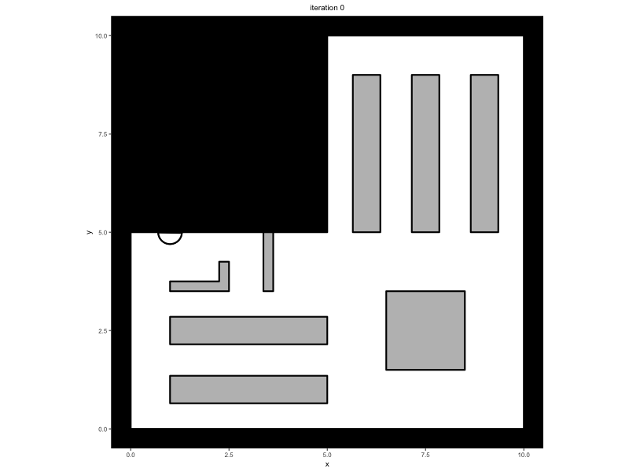

One of the major advances of the Minds for Mobile Agents model (M4MA)
is the ability to estimate its operational parameters on movement data
of sufficient quality. In this vignette, we will illustrate this through
two examples, one starting from the trace output from the
simulate
function and the other starting from a data.frame
containing measured movement data.
Note that for the estimation, predped only concerns
itself with computing the utilities and associated probabilities of each
expected movement decision. This means that we need to rely on external
packages to perform the estimation procedure, using an optimization
procedure to maximize the likelihood of the data under a set of
parameters. Within this vignette, we use the nloptr package
to perform this optimization procedure (Johnson, 2008). To install and
use this package, one can execute the following two commands:
install.packages("nloptr")
library(nloptr)For more information on the package and the nlopt library, we refer
the interested reader to the dedicated documentation sites
(nloptr: https://astamm.github.io/nloptr; NLopt: https://nlopt.readthedocs.io/en/latest).
Disclaimer
Note that data quality is determined by factors that commonly affect estimation in most domains, including: 1) the level of noise added by measurement (less is better!), 2) the lengths movements observed (longer is better!), and 3) the type of interactions among agents observed (some utilities are only identified if the behaviors they govern are observed in sufficient quantity). Experimentation is required to determine what level of quality is adequate in a specific scenario. Also note that the computation of the likelihood can become slow in large scenarios, so estimation may be practically difficult without large computing resources.
Starting from a Trace
Consider a trace
has been saved in the variable trace, containing a
simulation in which people walk around in a minimal supermarket with
some additional flow indicators to prevent blockages (see Advanced
Simulations):

Then we need to perform the following steps to estimate the
parameters of the M4MA to the data contained within this
trace.
First, one will have to transform the trace to a
data.frame, which can be achieved with the unpack_trace
function:
data <- unpack_trace(trace)The variable data contains information in a variety of
columns, namely:
colnames(data)
#> [1] "iteration" "time" "id" "x" "y"
#> [6] "speed" "orientation" "cell" "group" "status"
#> [11] "goal_id" "goal_x" "goal_y" "radius" "agent_idx"
#> [16] "check" "ps_speed" "ps_distance" "gd_angle" "id_distance"
#> [21] "id_check" "id_ingroup" "ba_angle" "ba_cones" "fl_leaders"
#> [26] "wb_buddies" "gc_distance" "gc_radius" "gc_nped" "vf_angles"
#> [31] "lgvf_data"Of these, some indicate attributes of the agent at a particular time
(e.g., position in x and y, speed and
orientation in speed and orientation) but also
the cell that they selected (cell) and variables that are
relevant for computing the utility of that decision (e.g.,
check, ps_speed, gd_angle,…). The
contents of the latter set of columns depend heavily on the requirements
of the utility functions defined in the m4ma package and we
refer the interested reader to its documentation for a full explanation
(https://research-software-directory.org/software/m4ma).
Second, we need to delete data points that are not relevant for
estimation. Given that the M4MAs operational parameters guide movement,
we can only use those data points at which agents were moving around
(except in cases where stopping is determined by the
stop_utility parameter). Within a trace, the
easiest way in which to spot whether this is the case is by filtering
out any rows in which the utility variables are NA,
indicating that they were not used during that iteration:
Note that this step is not necessary for the code to run, but that a
warning would be thrown in case NA are left in the
data.
Finally, once the data has been filtered to contain only
utility-governed data, we can compute the likelihood of that data under
a particular set of operational parameters. Calling this likelihood
,
then one can compute the negative log-likelihood
(i.e., a value for which smaller magnitudes indicate a better fit) with
the mll
function as follows:
# Define a set of parameters to be evaluated. For illustration purposes, we use
# the parameters of the DrunkAussie for this purpose. Note that we delete the
# agent's type name and their color from the parameters. Furthermore note that
# we need to transform the parameters to a numeric vector.
params <- load_parameters()$params_archetypes
params <- params[params$name == "DrunkAussie", -c(1, 2)] |>
unlist() |>
as.numeric()
# Compute the likelihood of the data under this parameter set
mll(
data,
params,
transform = FALSE,
summed = TRUE
)
#> eqivl lalcs ljafq nvdbz uiexk
#> 120.1554 219.0927 217.3531 162.2373 132.4960The output of this call to mll
is a named vector displaying the summed negative log-likelihood of the
data under the provided parameters.
In this piece of code, we specified the argument
transform = FALSE to communicate that the provided
parameters are on the bounded scale rather than the unbounded scale (see
Parameters in the vignette on Simulations).
When using an optimizer, it is usually better to let it work on an
unbounded scale (i.e., the full real line), in which case you can
specify transform = TRUE. Additionally, we specified
summed = TRUE to get the summed value for the negative
log-likelihood across all data points of a particular agent. If you wish
to see the values of the negative log-likelihood for each data point
individually, you can set summed = FALSE.
The call to the mll
function will serve as the basic building block of the estimation
procedure, which we dive more into in the next section.
Bounded Optimization
Typically, we want to estimate a set of unknown parameters best
describing our data. To achieve this via the nloptr
package, we need to first define an objective function, that is
a function that outputs a value to be minimized by the optimizer through
changing a vector of parameters that serve as an input to this function.
In our case, the objective function will be a wrapper around the mll
function, summing negative log-likelihoods across agents into one single
objective value:
objective_function <- function(parameters) {
return(
sum(
mll(
data,
parameters,
transform = FALSE,
summed = TRUE
)
)
)
}Note that this function only takes in a single argument
parameters: The content of the data that is
included in the call to mll is assumed to be a global
variable. Furthermore note that for our purposes, we assume that the
provided parameters fall on the bounded scale and therefore don’t need
to be transformed.
Once the objective function is defined, we can call the
nloptr function of the nloptr package to
perform the estimation procedure. Using the dividing rectangles
algorithm (Jones et al., 1993), for example, we get:
# Extract the bounds of the parameters
bounds <- load_parameters()$params_bounds
# Define the initial condition for the algorithm. Take the middle of the
# interval defined by the bounds
x0 <- rowMeans(bounds)
# Perform the estimation procedure
fit <- nloptr(
x0,
objective_function,
lb = bounds[, 1],
ub = bounds[, 2],
opts = list(
algorithm = "NLOPT_GN_DIRECT",
maxeval = 1000,
xtol_abs = 1e-4,
ftol_abs = 1e-4
)
)
# Print the resulting fit
fit
#>
#> Call:
#> nloptr(x0 = x0, eval_f = objective_function, lb = bounds[, 1],
#> ub = bounds[, 2], opts = list(algorithm = "NLOPT_GN_DIRECT",
#> maxeval = 1000, xtol_abs = 1e-04, ftol_abs = 1e-04))
#>
#>
#> Minimization using NLopt version 2.10.0
#>
#> NLopt solver status: 5 ( NLOPT_MAXEVAL_REACHED: Optimization stopped because
#> maxeval (above) was reached. )
#>
#> Number of Iterations....: 1000
#> Termination conditions: maxeval: 1000 xtol_abs: 1e-04 ftol_abs: 1e-04
#> Number of inequality constraints: 0
#> Number of equality constraints: 0
#> Current value of objective function: 566.319619486245
#> Current value of controls: 0.25 0.8333333 1.255 2.50005 500005 16 0.5 1.5 10 1.5 3.375 10 1.5 10.025 1.5
#> 10 1.5 0.5 10 1.5 160 1.5 110 110 1.5 2 10 55 0.5 0.5 0.5 0.5 0.5 1.5 10 10Individual Parameters
Up to now, we have assumed that each of the participants has the same parameter set underlying their movement data. More realistically, though, individuals differ in their walking tendencies, requiring us to estimate different parameters for each individual within our data.
To achieve this, we have to provide a matrix of parameter values to
the mll
function with rows indicating the individuals and the columns the
parameters of interest. In practice, we therefore need to change the
objective function so that:
# Get the number of participants in the study
n <- length(unique(data$id))
# Define the objective function
objective_function <- function(parameters) {
# Transform the parameters to the required format
parameters <- matrix(
parameters,
nrow = n,
ncol = 36
)
# Compute the objective
return(
sum(
mll(
data,
parameters,
transform = FALSE,
summed = TRUE
)
)
)
}Then, it’s just a matter of changing the initial conditions
x0 and the bounds lb and ub in
the nloptr function so that it matches the objective
function, in this case:
# Extract the bounds of the parameters
bounds <- load_parameters()$params_bounds |>
rep(each = n) |>
matrix(nrow = 36 * n, ncol = 2)
# Define the initial condition for the algorithm. Take the middle of the
# interval defined by the bounds
x0 <- rowMeans(bounds)
# Perform the estimation procedure
fit <- nloptr(
x0,
objective_function,
lb = bounds[, 1],
ub = bounds[, 2],
opts = list(
algorithm = "NLOPT_GN_DIRECT",
maxeval = 1000,
xtol_abs = 1e-4,
ftol_abs = 1e-4
)
)
# Print the resulting fit
fit
#>
#> Call:
#> nloptr(x0 = x0, eval_f = objective_function, lb = bounds[, 1],
#> ub = bounds[, 2], opts = list(algorithm = "NLOPT_GN_DIRECT",
#> maxeval = 1000, xtol_abs = 1e-04, ftol_abs = 1e-04))
#>
#>
#> Minimization using NLopt version 2.10.0
#>
#> NLopt solver status: 5 ( NLOPT_MAXEVAL_REACHED: Optimization stopped because
#> maxeval (above) was reached. )
#>
#> Number of Iterations....: 1000
#> Termination conditions: maxeval: 1000 xtol_abs: 1e-04 ftol_abs: 1e-04
#> Number of inequality constraints: 0
#> Number of equality constraints: 0
#> Current value of objective function: 4408.02012172839
#> Current value of controls: 0.25 0.25 0.2833333 0.2833333 0.2833333 1.5 1.5 1.5 0.8333333 1.5 1.255 1.255
#> 1.255 1.255 1.255 2.50005 2.50005 2.50005 0.8334167 2.50005 500005 500005
#> 500005 500005 500005 16 16 16 16 16 0.5 0.5 0.5 0.5 0.5 1.5 1.5 1.5 1.5 1.5 10
#> 10 10 10 10 1.5 1.5 1.5 1.5 1.5 10.025 10.025 10.025 10.025 10.025 10 10 10 10
#> 10 1.5 1.5 1.5 1.5 1.5 10.025 10.025 10.025 10.025 10.025 1.5 1.5 1.5 1.5 1.5
#> 10 10 10 10 10 1.5 1.5 1.5 1.5 1.5 0.5 0.5 0.5 0.5 0.5 10 10 10 10 10 1.5 1.5
#> 1.5 1.5 1.5 160 160 160 160 160 1.5 1.5 1.5 1.5 1.5 110 110 110 110 110 110 110
#> 110 110 110 1.5 1.5 1.5 1.5 1.5 2 2 2 2 2 10 10 10 10 10 55 55 55 55 55 0.5 0.5
#> 0.5 0.5 0.5 0.5 0.5 0.5 0.5 0.5 0.5 0.5 0.5 0.5 0.5 0.5 0.5 0.5 0.5 0.5 0.5 0.5
#> 0.5 0.5 0.5 1.5 1.5 1.5 1.5 1.5 10 10 10 10 10 10 10 10 10 10In this case, it may be useful to transform the parameters back to the matrix introduced in the objective function and provide it with matching column names denoting the parameters and row names denoting the participants themselves:
# Get the parameter names: By default the same order as the one in bounds
params <- load_parameters()$params_bounds |>
rownames()
# Get the id names: The same order as the ones output by mll
ids <- mll(data, bounds[, 1], transform = FALSE) |>
names()
# Transform the result to a matrix with the provided column and row names
fit$solution |>
matrix(nrow = length(ids), ncol = length(params)) |>
`rownames<-` (ids) |>
`colnames<-` (params)
#> radius slowing_time preferred_speed randomness stop_utility reroute
#> eqivl 0.2500000 1.5000000 1.255 2.5000500 500005 16
#> lalcs 0.2500000 1.5000000 1.255 2.5000500 500005 16
#> ljafq 0.2833333 1.5000000 1.255 2.5000500 500005 16
#> nvdbz 0.2833333 0.8333333 1.255 0.8334167 500005 16
#> uiexk 0.2833333 1.5000000 1.255 2.5000500 500005 16
#> b_turning a_turning b_current_direction a_current_direction
#> eqivl 0.5 1.5 10 1.5
#> lalcs 0.5 1.5 10 1.5
#> ljafq 0.5 1.5 10 1.5
#> nvdbz 0.5 1.5 10 1.5
#> uiexk 0.5 1.5 10 1.5
#> blr_current_direction b_goal_direction a_goal_direction b_blocked
#> eqivl 10.025 10 1.5 10.025
#> lalcs 10.025 10 1.5 10.025
#> ljafq 10.025 10 1.5 10.025
#> nvdbz 10.025 10 1.5 10.025
#> uiexk 10.025 10 1.5 10.025
#> a_blocked b_interpersonal a_interpersonal d_interpersonal
#> eqivl 1.5 10 1.5 0.5
#> lalcs 1.5 10 1.5 0.5
#> ljafq 1.5 10 1.5 0.5
#> nvdbz 1.5 10 1.5 0.5
#> uiexk 1.5 10 1.5 0.5
#> b_preferred_speed a_preferred_speed b_leader a_leader d_leader b_buddy
#> eqivl 10 1.5 160 1.5 110 110
#> lalcs 10 1.5 160 1.5 110 110
#> ljafq 10 1.5 160 1.5 110 110
#> nvdbz 10 1.5 160 1.5 110 110
#> uiexk 10 1.5 160 1.5 110 110
#> a_buddy a_group_centroid b_group_centroid b_visual_field central
#> eqivl 1.5 2 10 55 0.5
#> lalcs 1.5 2 10 55 0.5
#> ljafq 1.5 2 10 55 0.5
#> nvdbz 1.5 2 10 55 0.5
#> uiexk 1.5 2 10 55 0.5
#> non_central acceleration constant_speed deceleration a_lgvf b_lgvf e_lgvf
#> eqivl 0.5 0.5 0.5 0.5 1.5 10 10
#> lalcs 0.5 0.5 0.5 0.5 1.5 10 10
#> ljafq 0.5 0.5 0.5 0.5 1.5 10 10
#> nvdbz 0.5 0.5 0.5 0.5 1.5 10 10
#> uiexk 0.5 0.5 0.5 0.5 1.5 10 10Unbounded Estimation
The algorithm that we used before requires us to impose bounds on the
parameters. Often, however, optimization works best if the entire real
line can be searched. In this case, we change the argument
transform to TRUE and change the call to
nloptr as follows:
# Change the objective function to operate on the real scale
objective_function <- function(parameters) {
return(
sum(
mll(
data,
parameters,
transform = TRUE,
summed = TRUE
)
)
)
}
# Change the initial condition
x0 <- numeric(36)
# Perform the estimation procedure with an algorithm that does not require
# bounds to be specified
fit <- nloptr(
x0,
objective_function,
opts = list(
algorithm = "NLOPT_LN_SBPLX",
maxeval = 1000,
xtol_abs = 1e-4,
ftol_abs = 1e-4
)
)
# Print the resulting fit
fit
#>
#> Call:
#>
#> nloptr(x0 = x0, eval_f = objective_function, opts = list(algorithm = "NLOPT_LN_SBPLX",
#> maxeval = 1000, xtol_abs = 1e-04, ftol_abs = 1e-04))
#>
#>
#> Minimization using NLopt version 2.10.0
#>
#> NLopt solver status: 5 ( NLOPT_MAXEVAL_REACHED: Optimization stopped because
#> maxeval (above) was reached. )
#>
#> Number of Iterations....: 1000
#> Termination conditions: maxeval: 1000 xtol_abs: 1e-04 ftol_abs: 1e-04
#> Number of inequality constraints: 0
#> Number of equality constraints: 0
#> Current value of objective function: 348.816056297911
#> Current value of controls: -0.7980488 -0.8443498 0.2125047 -0.4001295 0.3627438 0.3627438 0.3627438
#> 0.3627438 -1.334698 -0.2805176 -0.1662079 9.372625 -0.5136853 -0.5633863
#> -1.038879 -0.7917356 -0.1031646 8.877348 0.3623326 -0.09864396 -1.521471
#> 0.28125 0.3627438 0.3627438 0.3627438 0.3627438 0.3627438 0.3346864 0.3346864
#> 0.3346864 0.3346864 0.3346864 0.3346864 0.3346864 0.3346864 0.3346864Importantly, the parameters now have been estimated to be on the real
line, yet the parameters of the M4MA need are naturally defined on
bounded scales. To transform the parameters to their natural values, we
use the to_bounded
function:
# Get the bounds of the parameters
bounds <- load_parameters()$params_bounds
# Extract the parameters and transform to a data.frame. Expected by the
# to_bounded function
params <- fit$solution |>
matrix(nrow = 1) |>
as.data.frame() |>
`colnames<-` (rownames(bounds))
# Use to_bounded to transform the parameters
transformed <- to_bounded(
params,
bounds
)
transformed
#> radius slowing_time preferred_speed randomness stop_utility reroute
#> radius 0.2212421 0.898474 1.464517 1.722718 641605.4 19.96485
#> b_turning a_turning b_current_direction a_current_direction
#> radius 0.6416018 1.924806 1.819753 1.168621
#> blr_current_direction b_goal_direction a_goal_direction b_blocked
#> radius 8.708234 20 0.9112081 5.767389
#> a_blocked b_interpersonal a_interpersonal d_interpersonal
#> radius 0.4482917 4.285149 1.376749 1
#> b_preferred_speed a_preferred_speed b_leader a_leader d_leader b_buddy
#> radius 12.82897 1.382131 20.50266 1.832222 141.1524 141.1524
#> a_buddy a_group_centroid b_group_centroid b_visual_field central
#> radius 1.924806 2.566407 12.83204 69.41761 0.6310692
#> non_central acceleration constant_speed deceleration a_lgvf b_lgvf
#> radius 0.6310692 0.6310692 0.6310692 0.6310692 1.893207 12.62138
#> e_lgvf
#> radius 12.62138Starting from Data
Within predped, we also allow users to estimate the M4MA
on their data directly. Consider the following data set taken from a
simplified train station, for example (see Advanced
Simulations):
head(data)
#> time passenger x y
#> 1 0.4090724 11 -4.537391 -0.09881539
#> 2 0.9447560 11 -4.334378 -0.28484220
#> 3 1.5367148 11 -4.029859 -0.56388241
#> 4 2.0341893 11 -3.725340 -0.84292263
#> 5 2.5059533 11 -3.573081 -0.98244273
#> 6 2.9901712 11 -3.573081 -0.98244273In this data set, we measured the positions (x and
y) of different passengers (passenger) at
several time points (time). To go from this data set to one
that we can use for the estimation procedure, we need to take the
following steps.
First, we need the data set to conform to the standards of
predped. This means that:
- The
timevariable needs to show discrete jumps conforming thetime_stepdefined by the M4MA (by default, half a second); - A variable
iterationneeds to be added showing the iteration at which the positions were measured; - The
passengervariable needs to be renamed to thepredpedinternalid.
Addressing the first change, this amounts to binning the data within a particular time window, aggregating the positions within that window through, for example, taking a mean, as we do in the next bit of code:
# Define the bins, assuming the time variable is specified in seconds
bins <- seq(
min(data$time),
max(data$time) + 0.5,
by = 0.5
)
# Loop over the bins and aggregate the data within those bins. Take the average
# of the bin as the time indication. Do this for each person separately.
data <- lapply(
unique(data$passenger),
function(x) {
data <- lapply(
1:(length(bins) - 1),
function(i) {
# Select the relevant data, it being the data where the time lies within
# a particular bin and the passenger is x
idx <- data$time <= bins[i + 1] & data$time >= bins[i] & data$passenger == x
selection <- data[idx, ]
# Aggregate and return a single row of data
if(nrow(selection) > 0) {
return(
data.frame(
time = (bins[i] + bins[i + 1]) / 2,
passenger = x,
x = mean(selection$x),
y = mean(selection$y)
)
)
} else {
return(NULL)
}
}
)
# Bind together and return
return(do.call("rbind", data))
}
)
# Bind all rows within the list of binned data together
data <- do.call("rbind", data)
# Order based on time
data <- data[order(data$time), ]
head(data)
#> time passenger x y
#> 80 0.6590724 11 -4.537391 -0.09881539
#> 81 1.1590724 11 -4.334378 -0.28484220
#> 82 1.6590724 11 -4.029859 -0.56388241
#> 83 2.1590724 11 -3.725340 -0.84292263
#> 84 2.6590724 11 -3.573081 -0.98244273
#> 85 3.1590724 11 -3.573081 -0.98244273The iteration variable requires integer values denoting
the bin in which the position was measured. To compute this variable, we
can perform the following computation:
data$iteration <- (data$time - min(data$time)) / 0.5 + 1
head(data)
#> time passenger x y iteration
#> 80 0.6590724 11 -4.537391 -0.09881539 1
#> 81 1.1590724 11 -4.334378 -0.28484220 2
#> 82 1.6590724 11 -4.029859 -0.56388241 3
#> 83 2.1590724 11 -3.725340 -0.84292263 4
#> 84 2.6590724 11 -3.573081 -0.98244273 5
#> 85 3.1590724 11 -3.573081 -0.98244273 6The column passenger can be renamed to id
in the following way:
colnames(data)[2] <- "id"
head(data)
#> time id x y iteration
#> 80 0.6590724 11 -4.537391 -0.09881539 1
#> 81 1.1590724 11 -4.334378 -0.28484220 2
#> 82 1.6590724 11 -4.029859 -0.56388241 3
#> 83 2.1590724 11 -3.725340 -0.84292263 4
#> 84 2.6590724 11 -3.573081 -0.98244273 5
#> 85 3.1590724 11 -3.573081 -0.98244273 6For estimation to work, we need to have at least 2 values per participant so that their speeds and orientations can be derived. We therefore need to delete any participant that does not have sufficient values in the data as follows:
Now that the dataset conforms to predpeds standards, we
have to compute the values of the input variables for the input
functions. For this, we first need to translate the environment in which
the data were collected to an instance of the background
to the best of our abilities. In this case, we collected the data in a
simplified train station that looks as follows:

Note that when there are restrictions in flow, this is ideally included in the creation of this background (see Advanced Simulations).
Additionally, we need to include information on the goals that the
people were trying to achieve within this environment, information that
is necessary due to the M4MAs assumption that movement within space is
guided by goals. Specifically, we need to define the position of the
goal as well as attach an identifier to this goal, each respectively
contained in the goal_x, goal_y, and
goal_id columns in the data. In this case, we know that
each person was walking towards a particular exit of the space. Based on
this information, we add the required columns as follows:
# Perform the mapping of a person with their goal position
mapping <- list(
"exit 1" = c(1, 3, 12, 14, 21, 23, 28, 32, 33),
"exit 2" = c(2, 4, 5, 6, 9, 11, 16, 25),
"exit 3" = c(7, 13, 18, 22, 24, 26, 30),
"exit 4" = c(8, 10, 15, 17, 19, 20, 27, 29, 21)
)
coordinates <- list(
"exit 1" = c(0, -2.5),
"exit 2" = c(-5, 0),
"exit 3" = c(0, 2.5),
"exit 4" = c(5, 0)
)
# Add placeholders in the dataset for the columns to be filled later
data$goal_x <- 0
data$goal_y <- 0
data$goal_id <- " "
# Loop over the different mappings and fill the columns of interest
for(i in seq_along(mapping)) {
# Define the rows to be filled based on the passengers moving to a particular
# location
idx <- data$id %in% mapping[[i]]
# Fill the columns based on the exit's information
exit <- names(mapping)[i]
data$goal_x[idx] <- coordinates[[exit]][1]
data$goal_y[idx] <- coordinates[[exit]][2]
data$goal_id[idx] <- paste("moving to", exit)
}
head(data)
#> time id x y iteration goal_x goal_y goal_id
#> 80 0.6590724 11 -4.537391 -0.09881539 1 -5 0 moving to exit 2
#> 81 1.1590724 11 -4.334378 -0.28484220 2 -5 0 moving to exit 2
#> 82 1.6590724 11 -4.029859 -0.56388241 3 -5 0 moving to exit 2
#> 83 2.1590724 11 -3.725340 -0.84292263 4 -5 0 moving to exit 2
#> 84 2.6590724 11 -3.573081 -0.98244273 5 -5 0 moving to exit 2
#> 85 3.1590724 11 -3.573081 -0.98244273 6 -5 0 moving to exit 2Once the setting and the people’s goals have been defined, we can
compute the input variables for the utility functions through the compute_utility_variables
function as follows:
utility_data <- compute_utility_variables(
data,
train_station
)
colnames(utility_data)
#> [1] "iteration" "time" "id" "x" "y"
#> [6] "speed" "orientation" "cell" "group" "status"
#> [11] "goal_id" "goal_x" "goal_y" "radius" "agent_idx"
#> [16] "check" "ps_speed" "ps_distance" "gd_angle" "id_distance"
#> [21] "id_check" "id_ingroup" "ba_angle" "ba_cones" "fl_leaders"
#> [26] "wb_buddies" "gc_distance" "gc_radius" "gc_nped" "vf_angles"
#> [31] "lgvf_data"As shown, the result contains all of the same columns as the ones
found in the transformed trace in the previous section.
From here on, the steps to take in the estimation routine are thus the
same and won’t be repeated.
References
Johnson, S. G. (2008). The NLopt nonlinear-optimization package. https://github.com/stevengj/nlopt
Jones, D. R., Perttunen, C. D., & Stuckmann, B. E. (1993). Lipschitzian optimization without the lipschitz constant. Journal of Optimization Theory and Applications, 79, 157.